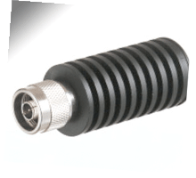

Dummy Loads
A dummy load is a device that can be used in a repair and/or maintenance facility to allow a transmitter to transmit while not allowing RFR energy into the free space of the workplace, which otherwise might cause workers to be exposed.